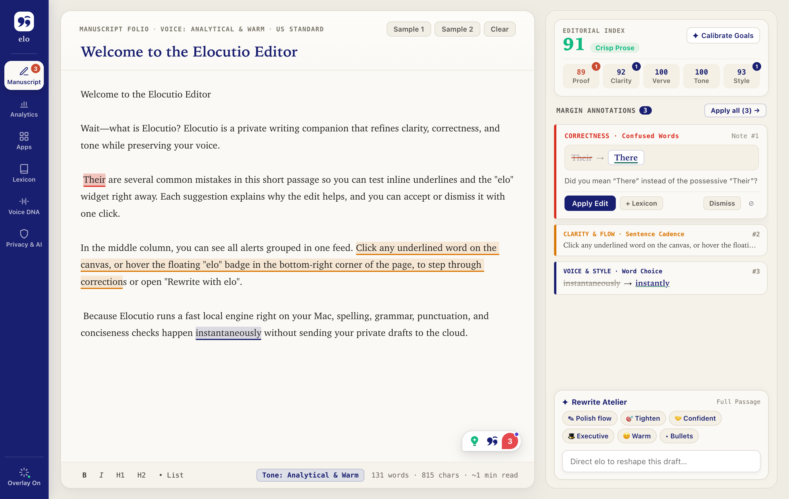

Instant local rules
Built on an Apache-2.0 fork of Harper Desktop. Spelling, punctuation, and agreement checks run directly on your Mac in under 10 ms — even completely offline.
Elocutio (el-oh-KOO-tee-oh) is a private writing companion that lives in your macOS menu bar and refines text in Mail, Slack, Notes, and Safari. Local Harper rules catch typos in under 10 ms; your chosen model handles judgment; and a local voice profile keeps every edit sounding like you.
Switch between the real screens of the macOS studio below — from the live manuscript editor and writing analytics to on-device AI provider presets, custom lexicon, and Voice DNA calibration.

Local-first correctness, bring-your-own-key intelligence, and zero middleman servers between your Mac and the provider you trust.
Built on an Apache-2.0 fork of Harper Desktop. Spelling, punctuation, and agreement checks run directly on your Mac in under 10 ms — even completely offline.
Use OpenRouter, Claude Haiku 5.5, OpenAI, Gemini, or local Ollama. Your API key stays in the macOS Keychain, and you pay your provider directly with no markup.
The floating suggestion card never steals keyboard focus. Edits apply cleanly via Accessibility or verified pasteboard (⌘V) across native and Chromium apps.
Elocutio never fine-tunes a cloud model on your writing. It builds a compact, explainable Style Card on your Mac from samples you paste (analyzed locally and immediately discarded) and edits you accept.
Rewrite with your local Style Card
“We’re moving the migration back two days — the schema suite is still failing in CI, and I want a clean run before we cut over.”
Elocutio is in pre-alpha (M1 in progress). Clone the repository to build the menu-bar companion and shared Rust workspace from source.
git clone git@github.com:pri-te-sh/elocutio.git
cd elocutio
./scripts/bootstrap.sh
just macos-devReading and replacing text across other apps requires the macOS Accessibility API, which the App Sandbox does not permit. Release builds target a Developer ID–signed, Apple-notarized DMG and Homebrew cask.
In local-only mode, nothing leaves your Mac. With a configured provider, only the text being analyzed (plus your compact Style Card if you turn on Use my voice) is sent directly to that provider using the key in your macOS Keychain.
Google Docs (canvas-rendered; Gmail, Notion, Slack, and Linear are covered by the planned browser extension), plagiarism scores, AI-detector scores, and enterprise SSO. Windows, iOS, and Android follow the macOS release on the shared Rust core.